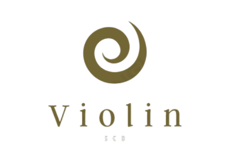

Apresentando a SCD Violin: ğ“£ğ“»ğ“ªğ“·ğ“¼ğ“¯ğ“¸ğ“»ğ“¶ğ“ªğ“·ğ“𓸠ğ“¶ğ“®ğ“µğ“¸ğ“ğ“²ğ“ªğ“¼ 𝓮𝓶 𝓶𝓪𝓰𝓲𝓪!
Procurando o instrumento perfeito para criar belas melodias ? seja um músico profissional ou um amante da música, a SCD Violin é a sua escolha ideal!
Nossa paixão pela música e dedicação à qualidade se unem para oferecer violinos exepcionais para músicos de todos os nÃveis. por que escolher a SCD Violin?
- Artesanato de excelência: O violino é habilmente construÃdo com os melhores materiais, produzindo uma sonoridade rica e melodiosa.
- Variedade de opção: Oferecemos uma ampla gama de modelos e tamanhos, para atender às suas necessidades e preferências musicais.
- Acessórios de qualidade: Fornecemos também, acessórios de qualidade, como arcos, estojos e cordas, que melhoram a sua experiência.
- Tudo isso + a orientação profissional de nossa equipe na escolha perfeita de seu violino, sem contar no envio rápido de nossas entregas.
Se você está pronto para desbloquear o poder da música, escolha a SCD Violin como seu parceiro musical confiável. Faça seu pedido agora e deixe sua música ecoar com perfeição!